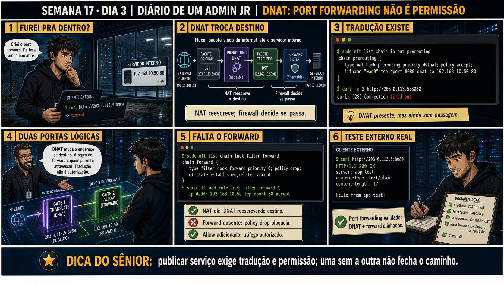

Semana 17 · Dia 3 | Nível Júnior — Redes
DNAT: Port Forwarding Não é Permissão
publicar serviço exige tradução e permissão; uma sem a outra não fecha o caminho
ANTES DE ALTERAR, OBSERVE. DEPOIS DE ALTERAR, VALIDE.
1. O chamado
#6650
PRIORIDADE MÉDIA
15:10
aberto por: desenvolvedor
host: servidor interno, publicado via 203.0.113.5:8080 · serviço: acesso externo a serviço interno
"Criei o port forward. De fora ainda não abre."
curl no IP público dá timeout. A regra DNAT existe e está correta. O que mais precisa existir pra esse caminho fechar?
💡 Passa o mouse nas palavras destacadas pra ver uma dica rápida — clica se quiser a explicação completa com analogia.
2. Antes de ver as opções — tenta responder
🧠 Recall ativo: quais são as duas etapas SEPARADAS que um pacote de fora precisa passar pra
chegar num serviço publicado via port forwarding?
1)
DNAT
na chain prerouting reescreve o destino (203.0.113.5:8080 → 192.168.10.50:80). 2) A chain
forward
decide se esse pacote traduzido tem PERMISSÃO de atravessar. NAT reescreve; firewall decide se passa —
são duas verificações independentes, ambas precisam estar certas.
3. Questão comentada — clica numa alternativa
nft list chain ip nat prerouting mostra a regra DNAT correta (porta 8080 →
192.168.10.50:80). curl externo ainda dá timeout. nft list chain inet filter forward mostra policy drop, sem
nenhuma regra de accept. Qual é a causa e a correção correta?
💡 Analogia do Sênior para Fixar: O princípio fundamental de 03 DNAT PORT FORWARDING é como o alicerce de sustentação de um viaduto: garante que a estrutura de comunicação suporte alto tráfego sem colapsar.
4. Decodificador de conceitos
Clica em qualquer termo pra ver a definição completa e uma analogia do dia a dia:
5. Ferramentas e leitura da evidência
| Comando | O que confirma |
|---|---|
nft list chain ip nat prerouting | Mostra as regras de DNAT — se o destino está sendo traduzido corretamente. |
nft list chain inet filter forward | Mostra se há permissão pro tráfego traduzido atravessar o firewall. |
curl -m 3 http://IP:porta | Testa o acesso real de fora, com timeout curto pra não travar o teste. |
--- tradução existe ---
$ sudo nft list chain ip nat prerouting
chain prerouting {
type nat hook prerouting priority dstnat; policy accept;
iifname wan0 tcp dport 8080 dnat to 192.168.10.50:80
}
$ curl -m 3 http://203.0.113.5:8080
curl: (28) Connection timed out
--- DNAT presente, mas ainda sem passagem ---
--- falta o forward ---
$ sudo nft list chain inet filter forward
chain forward {
type filter hook forward priority 0; policy drop;
ct state established,related accept
}
$ sudo nft add rule inet filter forward \
ip daddr 192.168.10.50 tcp dport 80 accept
--- teste externo real ---
$ curl http://203.0.113.5:8080
HTTP/1.1 200 OK
server: app-test
Hello from app-test!
5.1 O painel 4 da prancha mostra: "DNAT muda o endereço de destino. A regra de forward é quem permite atravessar. Tradução não é autorização."
Um colega, satisfeito ao ver a regra DNAT funcionando, quer marcar o chamado como resolvido antes de testar de fora.
Por que confirmar a regra DNAT sozinha não é suficiente pra considerar o serviço
publicado?
💡 Analogia do Sênior para Fixar: Diagnosticar anomalias em 03 DNAT PORT FORWARDING é como o eletricista usando o multímetro no quadro de disjuntores: mede a passagem de sinal no ponto exato da falha.
5.2 "A chain forward e a chain input são a mesma coisa, já que as duas envolvem firewall?"
Um colega, tentando resolver o port forward, adiciona a regra de permissão na chain input em vez da forward.
Por que isso não resolve o problema do port forward?
💡 Analogia do Sênior para Fixar: Aplicar as boas práticas de 03 DNAT PORT FORWARDING é como o protocolo de segurança da aviação: elimina pontos únicos de falha e garante previsibilidade operacional.
6. Procedimento profissional
- Configure a regra DNAT na chain prerouting, reescrevendo o destino corretamente.
- Confirme separadamente que a chain forward permite esse tráfego traduzido.
- Nunca assuma que DNAT sozinho já publica o serviço — teste de fora pra confirmar.
- Se faltar permissão, adicione uma regra específica na forward, não mude a policy geral.
- Documente as duas regras (NAT + forward) juntas, já que uma sem a outra não funciona.
7. Laboratório guiado — marca conforme for testando
Segurança: execute os testes apenas em VM descartável e confirme nomes de discos, hosts e arquivos antes de cada comando.
- Em VM de laboratório, configure uma regra DNAT redirecionando uma porta externa pra um serviço interno.$ sudo nft add chain ip nat prerouting '{ type nat hook prerouting priority dstnat; policy accept; }' $ sudo nft add rule ip nat prerouting \ iifname wan0 tcp dport 8080 dnat to 192.168.10.50:80
🔍 Detalhar esse comando
- chain ... prerouting, hook prerouting, priority dstnat
- Chain que avalia o pacote assim que ele chega, antes do roteamento — o ponto certo pra trocar o destino (DNAT), já que a decisão de rota ainda vai acontecer depois.
- iifname wan0
- Casa pela interface de ENTRADA (input interface) — o pacote precisa estar chegando pela WAN, vindo de fora.
- tcp dport 8080
- Casa pela porta pública anunciada — a porta que quem está de fora vai realmente usar.
- dnat to 192.168.10.50:80
- Reescreve o destino do pacote para o IP:porta do serviço interno real — é essa troca que caracteriza o DNAT.
Resultado esperado: regra visível em nft list chain ip nat prerouting.Por quê: é essa regra que decide qual serviço interno recebe o tráfego que chega numa porta pública específica.Cilada comum: confundir iifname (interface de entrada, usada no DNAT) com oifname (interface de saída, usada no SNAT/masquerade) — são pontos diferentes do pipeline. - Sem adicionar regra de forward, teste o acesso de uma máquina externa (ou simulada) à porta publicada.$ curl -m 3 http://203.0.113.5:8080
🔍 Detalhar esse comando
- -m 3
- Timeout máximo de 3 segundos pra operação inteira — evita que o teste fique travado esperando indefinidamente quando o pacote é descartado silenciosamente pelo firewall.
Resultado esperado: timeout, mesmo com a regra DNAT presente e correta (curl: (28) Connection timed out).Por quê: prova na prática que DNAT sozinho não autoriza o pacote a atravessar o firewall — tradução não é a mesma coisa que permissão.Cilada comum: ver o timeout e concluir que a regra DNAT está errada — o problema mais comum nesse ponto é falta de permissão na chain forward, não erro na tradução. - Confirme com nft list chain inet filter forward que não há regra de permissão pro destino traduzido.$ sudo nft list chain inet filter forwardResultado esperado: policy drop confirmada, sem regra de accept correspondente (só "ct state established,related accept").Por quê: confirma exatamente onde está a lacuna — a chain forward está bloqueando por padrão qualquer conexão nova que não seja resposta de uma já estabelecida.Cilada comum: adicionar a regra de permissão na chain input em vez da forward — input avalia tráfego destinado ao próprio roteador, forward avalia tráfego atravessando rumo a outro destino (o servidor interno).🧑🏫 Aqui entra o Mentor (em breve): se mesmo após adicionar a regra de forward o acesso ainda falhar, este é o ponto onde o chat com o Sênior-IA vai ajudar a investigar hairpin NAT ou roteamento adicional.
- Adicione a regra específica de forward e teste de novo o acesso externo.$ sudo nft add rule inet filter forward \ ip daddr 192.168.10.50 tcp dport 80 accept $ curl http://203.0.113.5:8080
🔍 Detalhar esse comando
- ip daddr 192.168.10.50 tcp dport 80
- Casa pelo destino JÁ TRADUZIDO — o IP e porta do serviço interno real, não a porta pública 8080 (a chain forward avalia o pacote depois do DNAT já ter acontecido).
- accept
- Libera especificamente esse destino, sem abrir a policy geral da chain — mantém o firewall restritivo pra tudo o mais.
Resultado esperado: conexão bem-sucedida, serviço respondendo normalmente (HTTP/1.1 200 OK).Por quê: só agora as duas etapas (tradução + permissão) estão alinhadas — é isso que realmente publica o serviço.Cilada comum: mudar a policy geral da chain forward para accept em vez de adicionar uma regra específica — isso resolve o teste mas abre passagem para qualquer destino, não só o serviço que você queria publicar. - Documente: IP público, porta pública, destino interno, regra de firewall — reproduzindo o painel 6 da prancha de hoje.Resultado esperado: checklist completo de port forwarding validado.Por quê: documentar as duas regras juntas (NAT + forward) evita que alguém remova uma delas no futuro sem perceber que dependem uma da outra.
8. Validação e encerramento
- A regra DNAT foi confirmada separadamente da regra de permissão de forward.
- O serviço foi testado de fora de verdade, não só a configuração de tradução.
- A correção usada foi uma regra específica de forward, não uma mudança de policy geral.
- Ambas as regras (NAT + forward) foram documentadas juntas.
Rollback e limites
Tanto a regra DNAT quanto a de forward podem ser removidas com nft delete rule,
usando os handles mostrados por nft -a list. O cuidado real é nunca considerar um port forward "pronto" só
porque a tradução existe — sempre validar com um teste real de fora.
💡 Sobre repetição espaçada: "tradução não é autorização" conecta com a
Semana 15 (serviço escutando não é o mesmo que porta permitida no firewall) — mesma disciplina de duas
perguntas independentes, agora com uma camada extra de NAT. O Anki vai conectar os dois.
9. Resposta final
Alternativa correta: A. Nesta aula, a causa certa foi falta de regra
de permissão na chain forward, mesmo com o DNAT correto. O ponto central do caso é este: publicar
serviço exige tradução e permissão; uma sem a outra não fecha o caminho.
🔓 O que você desbloqueou hoje
Capacidade de publicar um serviço interno com DNAT, entendendo que tradução e
permissão de firewall são duas verificações independentes. Amanhã você aprende a diagnosticar exatamente
qual das duas — NAT ou firewall — é a causa quando o mesmo sintoma (timeout externo) aparece.